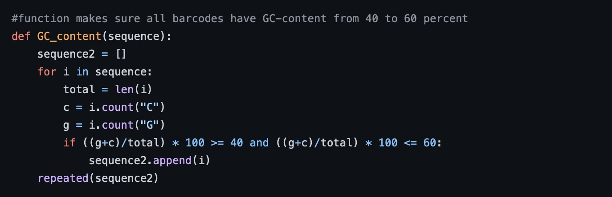

Joy Son
Boston College, 2020
Gene Sequence
This program helps distinguish different DNA molecules by generating unique DNA barcodes using Python. The user retrieves this data through a text file by inputting the number of sequences and the length of the sequences needed. The barcodes are generated with the following criteria: GC-content ranging from 40% to 60%, no more than 2 consecutive identical nucleotides, exclusion of restriction sites for enzymes AgeI, AscI, BamHI, SbfI, and hamming distance of at least 3. The hamming distance refers to the number of positions, between 2 barcodes, where the nucleotides are different.
Source Code
Copyright © 2020 Joy Son